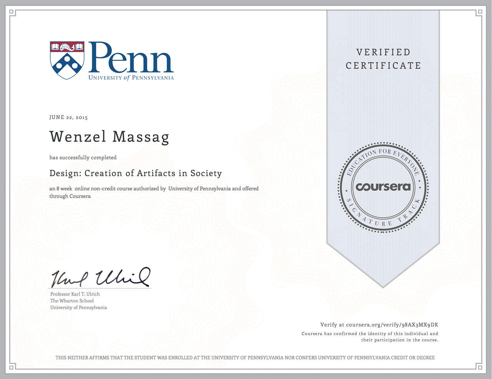

Wenzel Massag
It's our vision of the future that guides our decisions towards itself.
Our present is just the result.
It's our vision of the future that guides our decisions towards itself.
Our present is just the result.
This website is being created as part of the Course "Design: Creation of Artifacts in Society" on Coursera. As part of this course each student is asked to create a site where they document their homework for peer evaluation. You are welcome to click around and have a look.
Completed (June 2015), for more information see week 8.
